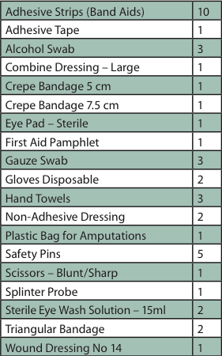
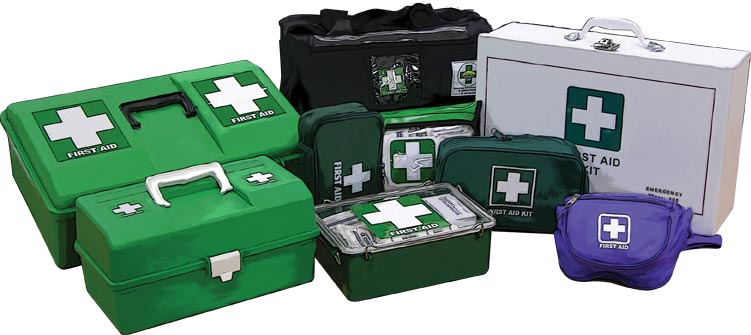

First Aid Kits
First Aid Kits
You may hope that an emergency never occurs, but if it does you need to be prepared. Part of being prepared is keeping an appropriately stocked and maintained first aid kit. Having an adequate first aid kit equips you to provide emergency assistance if required. First aid kits can have different contents, depending on your specific requirements and situation.
Recommended Contents of a Personal First Aid Kit

Keep a first aid kit at home, in your car and at your workplace. The best first aid kits take into account the specific uses the kit is designed for.
Store first aid kits in a cool, clean and dry location that is childproof. A regular check of contents is essential, ensuring the contents are present, not out of date and are in good condition.

Make sure that all your family members and staff know where the first aid kit is so that it can be quickly retrieved in an emergency.
Under State and Territory legislation, first aid kits must be kept in any workplace. State and Territory government agencies have legislation, codes of practice or guidelines on first aid issues as part of occupational health and safety (OHS) requirements.
Information on first aid can be found on the following government websites.
Federal – http://www.comcare.gov.au
ACT – http://www.workcover.act.gov.au
NSW – http://www.workcover.nsw.gov.au
NT – http://www.deet.nt.gov.au
QLD – http://www.whs.qld.gov.au
SA – http://www.workcover.com
TAS – http://www.wsa.tas.gov.au
VIC – http://www.worksafe.vic.gov.au
WA – http://www.safetyline.wa.gov.au